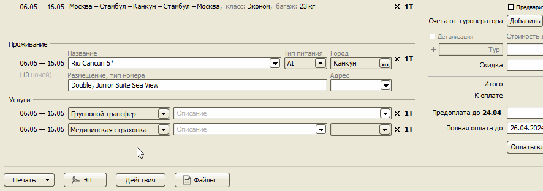
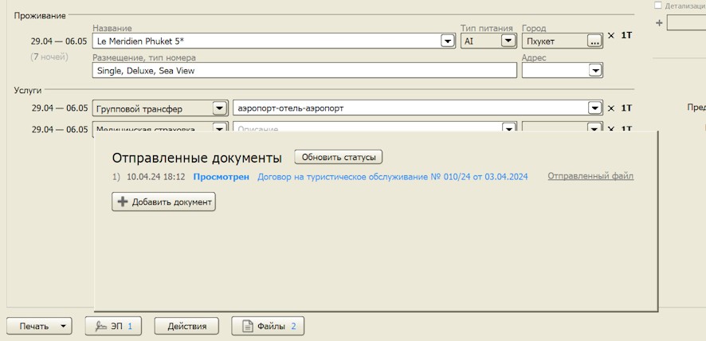
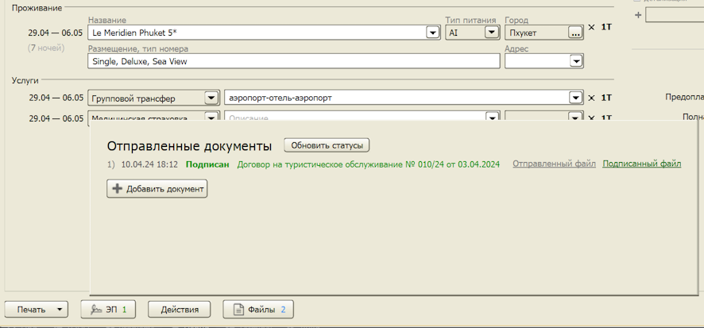

Подписание договора с туристом простой электронной подписью
(только в версии Pro)
Инструкция по настройке сервиса
Данная функция позволяет оформить договор с клиентом удаленно, без посещения офиса, по следующей схеме:
1) Менеджер заполняет заявку и с помощью программы создает Договор в электронном виде.
2) Клиенту по SMS отправляется ссылка на PDF-документ Договора, с которым он может ознакомиться прямо с мобильного телефона.
3) Для подписания Договора клиент вводит свои персональные данные и код из SMS.
4) Договор подписан. Одна копия высылается на e-mail клиента, вторая автоматически прикрепляется к заявке в программе.
Простой электронной подписью можно подписать любой документ, который формируется из заявки. Например, Дополнительное соглашение.
Перед созданием и отправкой на подпись документов необходимо один раз произвести Настройку сервиса.
Создание электронного договора
В заявке нужно нажать кнопку "ЭП" и выберать в списке один или несколько документов, которые вы хотите подписать с клиентом электронно. Далее нажать кнопку "Создать документы", все документы создадутся, после чего необходимо просмотреть каждый документ перед отправкой (кнопка "Показать документ") и затем отправить на подпись соответствующей кнопкой "Отправить на подпись".

Программа автоматически будет обновлять статусы документов. Например, можно будет увидеть, когда клиент просмотрел отправленный ему договор.

После подписания договора клиентом подписанная копия документа автоматически появится в заявке.

Остались вопросы? Напишите нам на e-mail